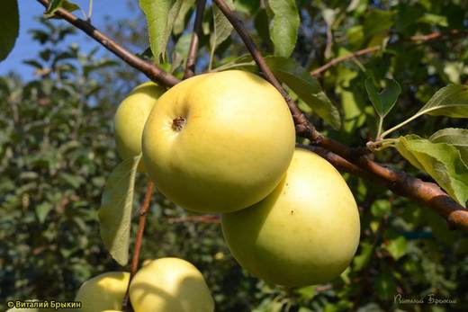
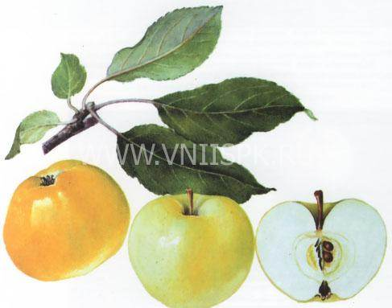
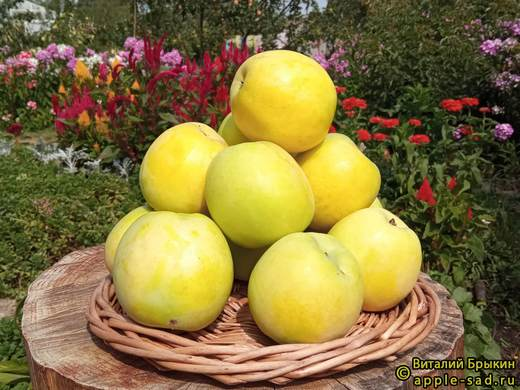
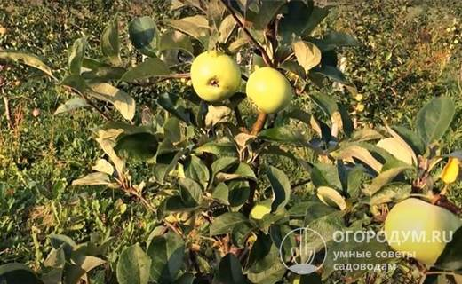
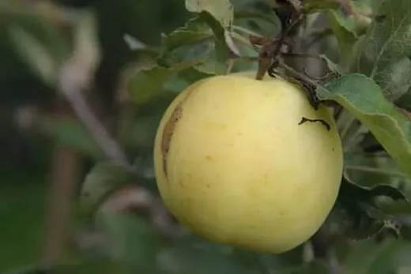

Золотистые десертные яблоки мичуринской селекции: «плодоносит всегда обильно, аж ветки ломятся» — так о нём отзываются садоводы.





Клик по фото — полный размер. Фотографии иллюстрируют сорт/вид; собраны из открытых источников (питомники, сортовые каталоги, Википедия).
Народное — раннеосенний сорт мичуринской селекции. Плоды золотисто-жёлтые, округло-конические, нередко с лёгкой оржавленностью у плодоножки, 110–140 г. Мякоть сочная, отличного кисло-сладкого вкуса с ароматом — дегустационная оценка 4,5–4,7 (ряд источников даёт до 4,8).
Дерево среднерослое: крона раскидистая, но невысокая — удобно собирать урожай и обрабатывать. Сорт скороплодный, плодоносит обильно и, что редкость, ежегодно. Зимостойкость высокая, к парше устойчив средне.
| Зимостойкость | высокая |
| Устойчивость к парше | средняя |
| Самоплодность | частичная — с опылителями лучше |
| Лёжкость | сентябрь–декабрь |
| Назначение | десертное, сок, сушка |
Советы собраны из отзывов садоводов на форумах и из практики питомников; цитаты приведены по источникам ниже.